홍보 영상
우리반 허브를 짧은 영상으로 소개해요.
영상 준비 중곧 이곳에서 바로 볼 수 있어요.
공개 체험개발 중인 학급 안내 앱
공지·숙제·준비물·일정을 우리반 칠판 한곳에 올려요. 학생은 아직 안 본 것부터 보고, 선생님은 확인하지 않은 학생에게만 다시 알려요.
개발 중인 앱을 열어 보세요. 교사 기능은 운영자 승인 후 사용할 수 있어요. 실제 학생 개인정보 대신 예시 정보로 체험해 주세요. 이용 안내
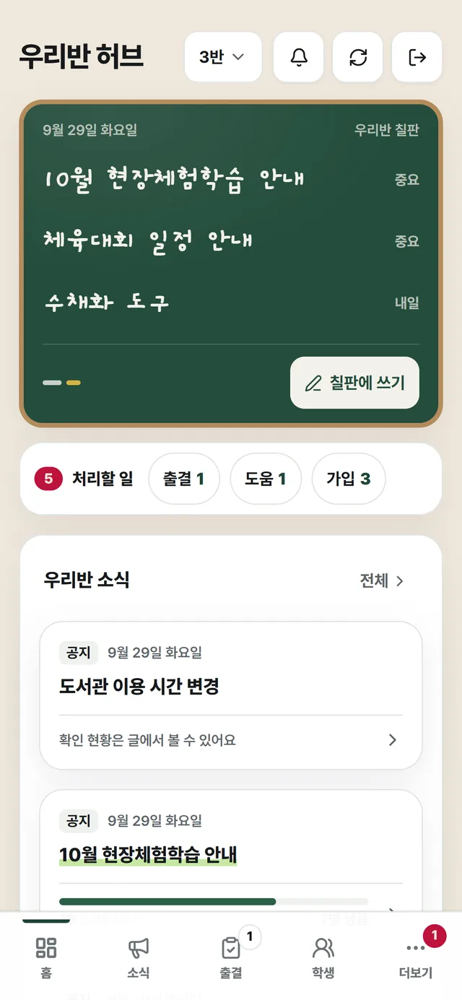
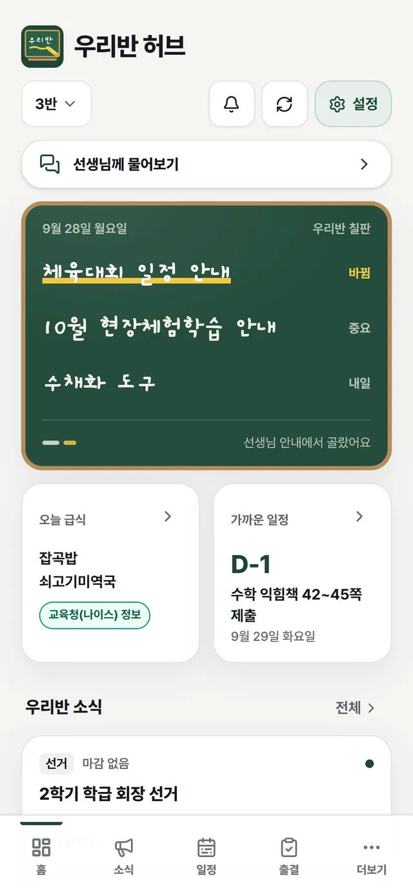
영상·소개 자료
짧은 영상과 소개 자료로 우리반 허브의 모습을 살펴보세요.
우리반 허브를 짧은 영상으로 소개해요.
자료를 넘기며 기능과 사용 방법을 살펴보세요.
가입부터 우리반 참여와 소식 확인까지 살펴보세요.
반 만들기부터 학생 승인과 공지 작성까지 살펴보세요.
학생 홈의 우리반 칠판에는 바뀐 공지·중요 공지·챙길 준비물 중 꼭 볼 것 3가지가 올라와요. 나머지 새 소식은 바로 아래 소식 목록에서 봐요.
선생님이 글을 고치면 '바뀜' 표시가 붙고, 이미 확인한 학생도 다시 확인해요.
이메일로 가입해요. 궁금한 점은 선생님과 1:1 도움 대화로 물어봐요. 반 대화는 선생님이 열어야 쓸 수 있고, 밤에는 잠겨요.
새로 생긴 기능
홈 화면 맨 위 칠판에 아직 안 본 공지와 챙길 것이 모여요. 선생님께 묻기, 반 투표·선거, 다음 주 급식도 새로 생겼어요.
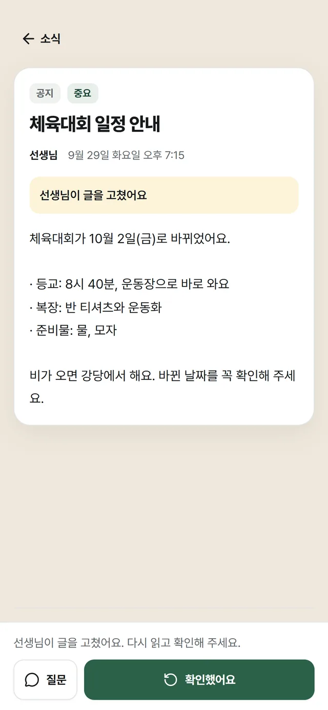
아직 안 본 공지와 챙길 것이 홈 맨 위에 모여요. 고친 글에는 '바뀜' 표시가 붙어요.
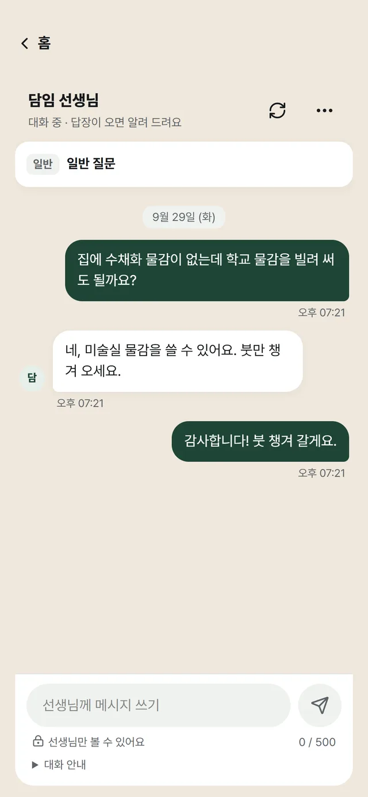
학생은 담임 선생님과 1:1로 물어봐요. 다른 학생에게는 보이지 않아요.
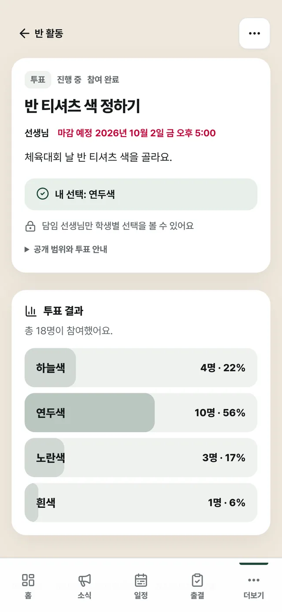
반 의견을 모으고 대표를 뽑아요. 비밀투표 여부와 결과 공개 시점을 정할 수 있어요.
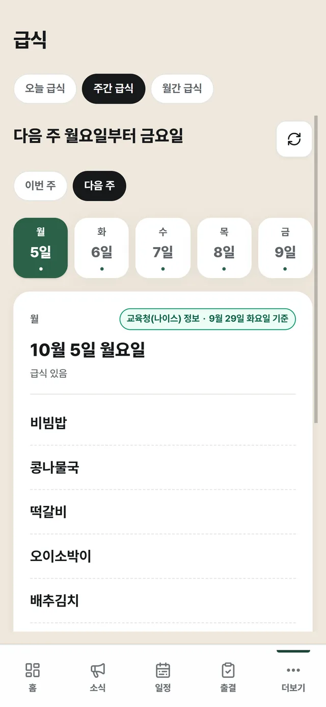
요일을 눌러 메뉴를 봐요. 달이 바뀌는 주도 이어서 보여요.
시작 방법
학교와 학년·반을 고르면 초대 코드와 QR 코드가 생겨요.
학생은 휴대폰으로 QR 코드를 찍거나 초대 코드를 입력해 참여를 요청해요.
'대기 학생 모두 승인' 버튼으로 한꺼번에 승인해요.
공지·숙제·준비물·수행평가를 한 화면에서 골라 올려요.
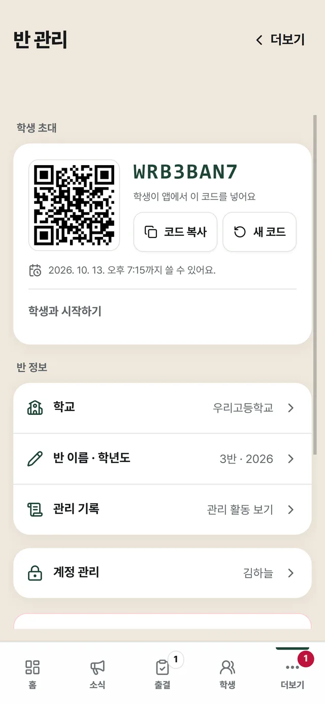
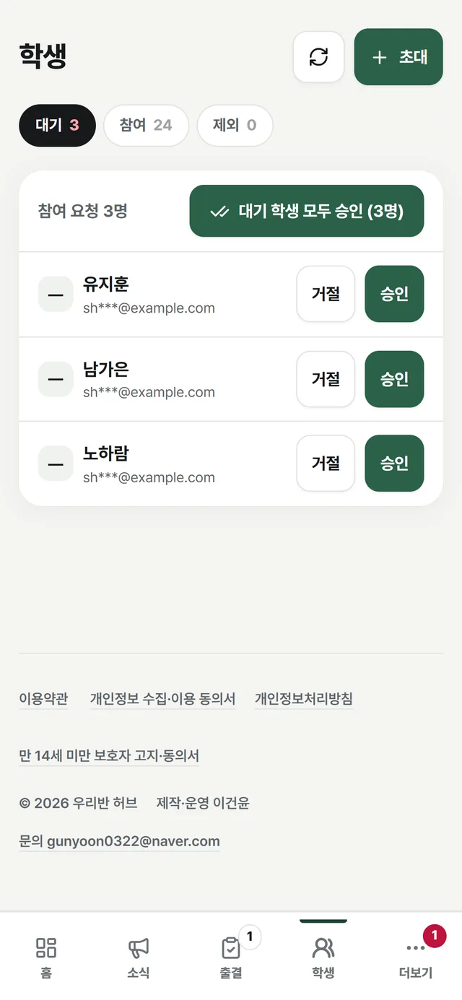
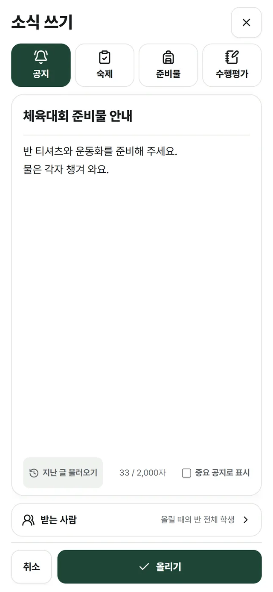
선생님 홈 칠판 아래 '칠판에 쓰기'를 누르면 바로 글을 올릴 수 있어요. 학생 칠판에는 각자 아직 안 본 것만 보여요.
하루 예시
체육대회 날짜가 바뀐 날, 선생님과 학생이 하는 일을 시간 순서로 보여 드려요.
1아침
체육대회 날짜를 고쳐 다시 올려요.
칠판에서 '바뀜' 표시를 보고 글을 열어 '확인했어요'를 눌러요.
지원 기기에서 홈 화면에 추가하고 알림을 허용하면 알림을 받아요. 수업 시간과 밤에는 바로 보내지 않고 나중에 모아서 보내요.
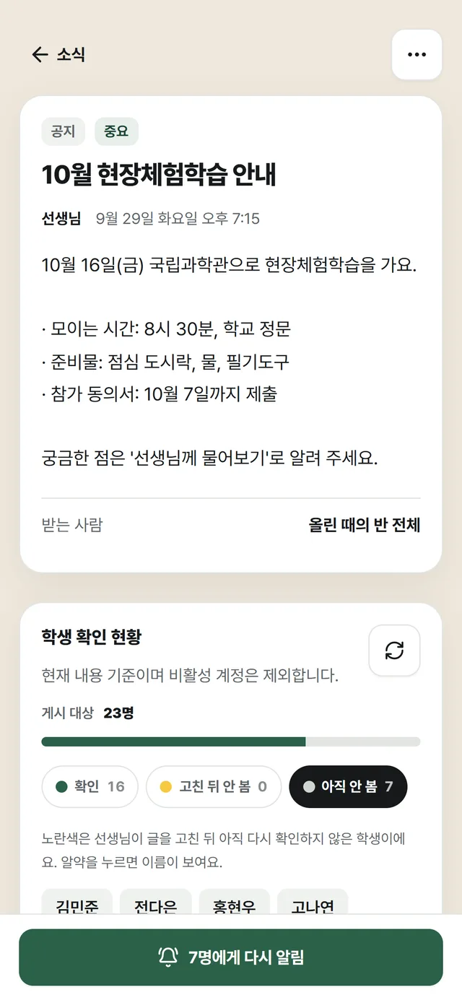
2점심
확인한 학생·고친 뒤 안 본 학생·아직 안 본 학생이 나뉘어 보여요.
'7명에게 다시 알림'을 누르면 아직 안 본 학생에게만 앱 안에서 알려요. 문자나 메일은 보내지 않아요.
3방과 후
'선생님께 물어보기'나 공지 아래 '질문'을 눌러 담임 선생님께 보내요.
홈의 처리할 일에서 바로 열어 답해요. 대화는 학생과 선생님만 봐요.
화면 속 학교·이름·날짜는 모두 예시예요.
교실 PC에서도
교실 PC나 노트북으로 열면 칠판·소식·처리할 일이 한 화면에 나란히 보여요.
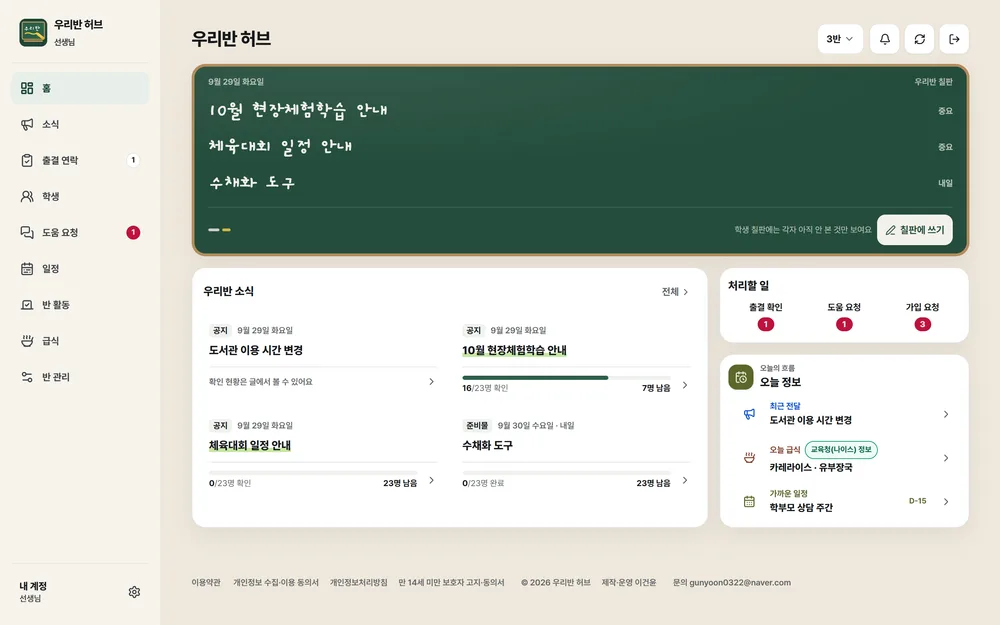
비교
단체 대화방, 알림장형 앱, 커뮤니티형 학급 앱과 나란히 놓고 봤어요. 우리반 허브는 공지를 전하고 확인받는 일에 집중해요.
확인한 학생과 아직 안 본 학생을 나눠 보여 줘요.
'바뀜' 표시가 붙고, 이미 본 학생도 다시 확인해요.
이메일로 가입하고, 선생님이 승인한 학생만 들어와요.
휴대폰·교실 PC 브라우저에서 주소만 열면 돼요.
| 항목 | 단체 대화방 | 알림장형 앱 | 커뮤니티형 학급 앱 |
우리반 허브 |
|---|---|---|---|---|
| 공지가 대화에 묻히지 않아요 | 서비스마다 달라요 | 기본으로 돼요 | 서비스마다 달라요 | 아직 안 본 공지만 칠판에 남아요. |
| 누가 확인했는지 학생별로 | 어려워요 | 서비스마다 달라요 | 서비스마다 달라요 | 확인한 학생·안 본 학생 명단을 보여 줘요. |
| 고친 공지를 다시 확인받기 | 어려워요 | 서비스마다 달라요 | 서비스마다 달라요 | '바뀜' 표시와 다시 확인한 학생 수를 보여 줘요. |
| 안 본 학생에게만 다시 알리기 | 어려워요 | 서비스마다 달라요 | 서비스마다 달라요 | 확인하지 않은 학생에게만 알려요. |
| 전화번호 없이 가입 | 어려워요 | 서비스마다 달라요 | 서비스마다 달라요 | 이메일로 가입해요. |
| 다른 학생 모르게 선생님께 질문 | 서비스마다 달라요 | 서비스마다 달라요 | 서비스마다 달라요 | 담임 선생님과 1:1 도움 대화로 물어봐요. |
| 밤에는 반 대화 쉬게 하기 | 어려워요 | 서비스마다 달라요 | 서비스마다 달라요 | 선생님이 열어야 쓰고, 밤 10시~아침 7시엔 학생이 보낼 수 없어요. |
종류별로 흔히 볼 수 있는 모습을 정리했어요. 특정 서비스를 가리키지 않으며, 서비스마다 실제 기능은 다를 수 있어요. 반 대화는 선생님이 관리하는 보조 기능이에요.
기능
기능을 다섯 가지로 나눠 실제 화면과 함께 보여 드려요.
공지·숙제·준비물·수행평가를 한 화면에서 올려요.
누가 확인했는지 보고, 아직 안 본 학생을 챙겨요.
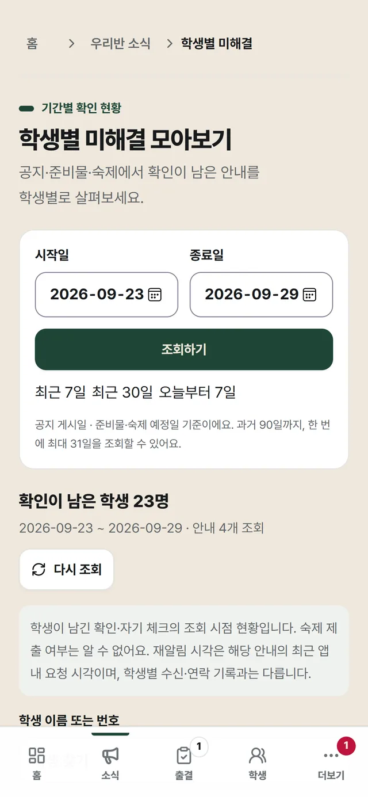
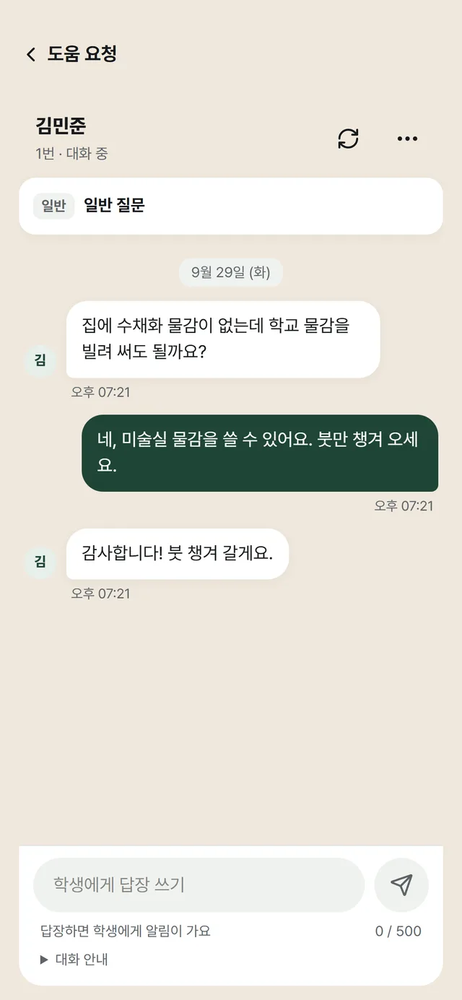
학생 화면에는 아직 안 본 것과 오늘 챙길 것이 먼저 나와요.
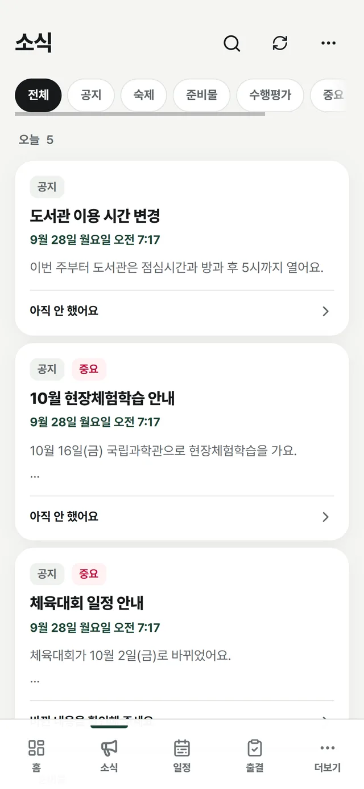
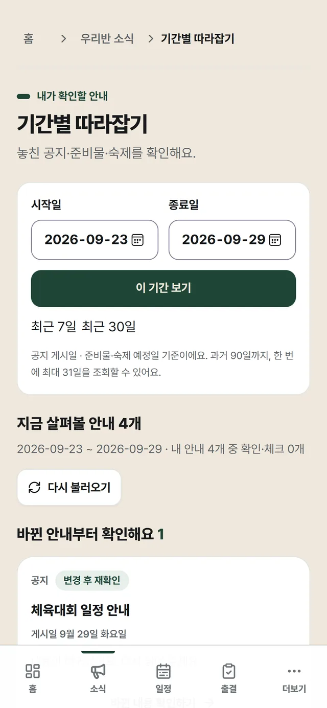
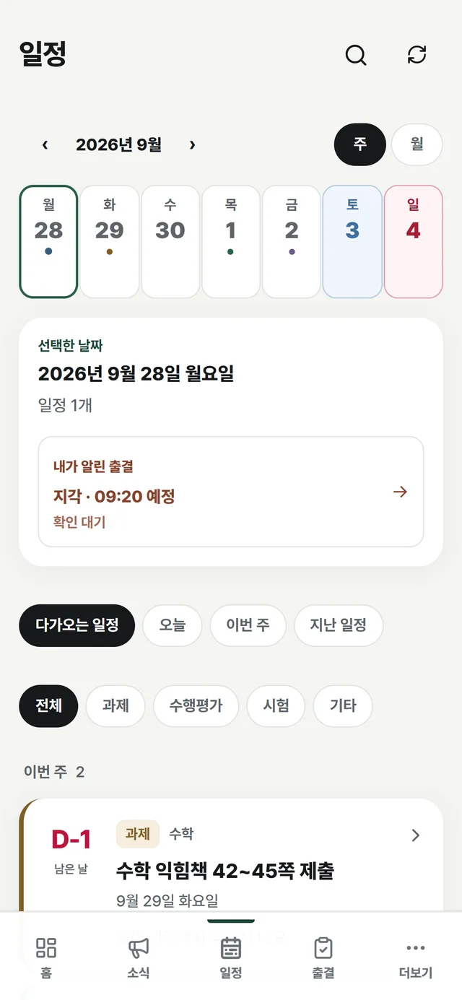
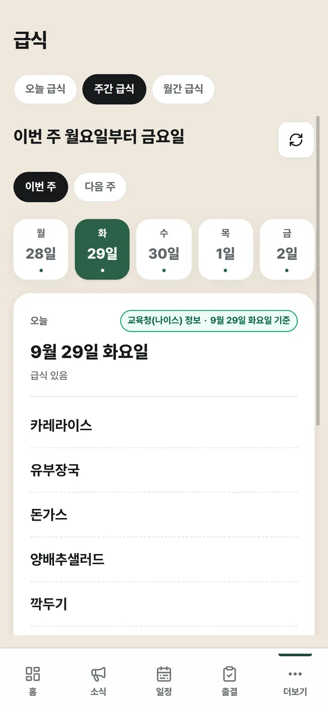
반의 의견을 모으고, 대표를 뽑아요.
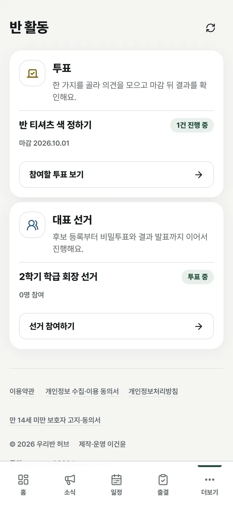
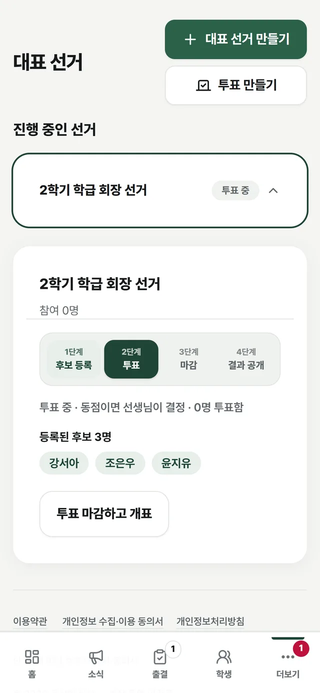
학생 승인부터 학년 말 마무리까지 선생님이 관리해요.
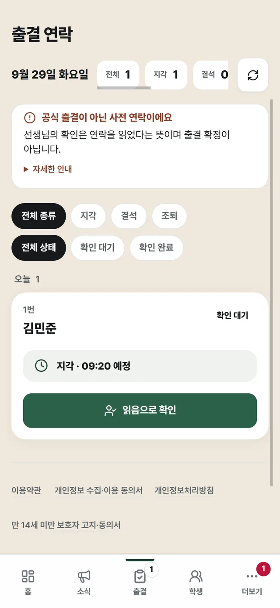
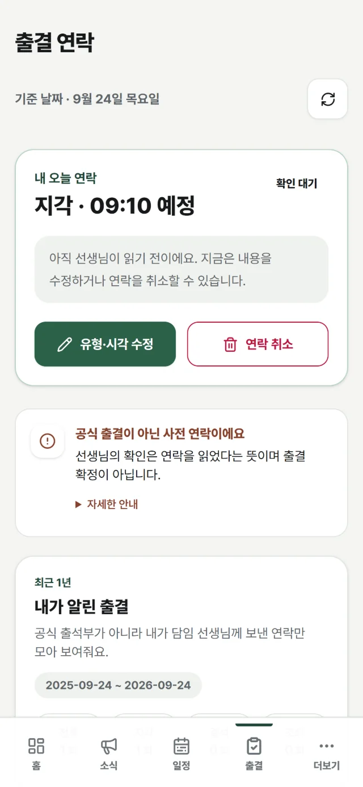
개인정보와 안전
코드를 알아도 승인 전에는 반 자료를 볼 수 없어요.
이메일로 가입하고, 승인 화면에서도 이메일 일부는 가려져요. 반 대화에서 문제가 되는 말은 선생님께 신고할 수 있어요.
학생이 보낸 질문과 답장은 그 학생과 담임 선생님만 볼 수 있어요.
공개 체험은 만 14세 이상, 학생은 중학교 3학년 이상을 대상으로 해요. 생년월일과 프로필 사진은 원할 때만 입력해요.
앱의 개인정보처리방침은 개발본이에요. 실제 학급 운영에 앞서 확정·게시할 예정이며, 지금은 예시 정보로 체험해 주세요.
설정에서 계정 삭제를 요청할 수 있어요. 실제 학생의 자료를 보관하는 용도로는 아직 사용하지 마세요.
공개 체험 이용 안내
우리반 허브는 개발 중이에요. 먼저 화면과 기능을 써 보고, 불편한 점이나 의견을 알려 주세요.
실제 학급 운영을 시작하기 전의 체험판이에요. 학생의 실제 이름·연락처·상담 내용 등 개인정보 대신 예시 정보를 사용해 주세요.
자주 묻는 질문
계정과 로그인 → 학생 참여 → 교사 운영 순서로 안내해요. 질문을 누르면 자세한 답을 볼 수 있어요. 해결되지 않으면 메일로 알려 주세요.
소개 페이지의 ‘우리반 허브 열기’를 누르면 현재 접속 가능한 앱으로 이동해요. 계정이 있으면 가입한 이메일과 비밀번호로 로그인하고, 처음이면 ‘선생님·학생 가입’을 눌러 주세요. 지금은 개발 중인 공개 체험이므로 실제 학생 개인정보 대신 예시 정보로 체험해 주세요.
별도 설치 없이 크롬·사파리 같은 인터넷 창에서 열 수 있어요. 휴대폰과 PC에서 같은 계정으로 이용해요. 홈 화면 추가와 기기 알림은 지원 기기에서 따로 설정하며, 기기·브라우저에 따라 사용 가능한 기능이 달라요.
가입 화면에서 ① 학생 또는 선생님 선택 ② 나이 확인 ③ 이메일·기본 이름·비밀번호 입력 ④ 약관과 개인정보 수집·이용 내용을 확인하고 동의 순서로 진행해요. 가입 후에는 로그인 화면에서 직접 로그인해야 해요. 이메일 가입 기준이며 빠른 로그인은 제공되는 버튼과 화면 안내를 따라 주세요.
현재 공개 체험은 만 14세 이상, 학생은 중학교 3학년 이상을 대상으로 해요. 가입 화면의 나이 확인은 본인에게 맞게 선택해 주세요. 초등학생·중학교 1·2학년이나 만 14세 미만의 이용 가능 여부를 임의로 판단하지 말고 운영자에게 문의해 주세요.
아이디는 가입할 때 사용한 이메일이에요. 이메일 가입 비밀번호는 문자와 숫자를 모두 포함해 6자 이상 입력하고 확인 칸에도 같게 입력해 주세요. 다른 서비스와 겹치지 않는 충분히 긴 비밀번호를 권해요. 기본 이름은 친구와 선생님에게 보이는 이름이에요.
가입한 이메일과 비밀번호로 로그인한 뒤 이메일로 받은 숫자 6자리 가입 인증번호를 입력하고 ‘가입 인증 완료’를 눌러요. 학생의 반 초대 코드나 교사의 별도 승인번호와는 다른 번호예요. 가입 인증이 끝나면 계정 상태에 맞는 다음 단계가 안내돼요.
가입한 이메일 주소와 스팸함을 먼저 확인하고 ‘인증번호 메일 다시 보내기’를 눌러 주세요. 번호는 10분 동안 유효하고 5회 틀리면 새 번호가 필요해요. 반복 요청 제한이 표시되면 화면에 안내된 시간 뒤 다시 시도해요. 메일 전송 실패가 계속되면 화면 아래 문의 이메일로 연락해 주세요.
가입 인증번호는 이메일을 확인하는 숫자 6자리예요. 교사 승인번호는 관리자가 교사 확인 후 발급하는 숫자 6자리이며 교사에게만 필요해요. 반 초대 코드는 담임이 학생에게 주는 영문 대문자·숫자 8자리로, 반 참여 요청에 사용해요. 서로 다른 칸에 입력하므로 바꿔 넣지 마세요.
로그인 화면의 ‘비밀번호를 잊으셨나요?’에서 가입한 이메일로 재설정 메일을 요청해요. 메일의 재설정 링크는 30분 동안 한 번 사용할 수 있어요. 아이디는 이메일이며 ‘아이디 찾기’ 안내를 확인할 수 있어요. 이메일 자체가 기억나지 않으면 담임이나 운영자에게 문의하고, 비밀번호·인증번호를 문의 메일에 적지 마세요.
개발 중에는 점검·재시작으로 접속이 잠시 끊길 수 있어요. 예전에 저장한 앱 주소 대신 이 소개 페이지의 ‘우리반 허브 열기’로 다시 접속해 주세요. 새 주소 반영에 몇 분 걸릴 수 있어요. 계속 안 되면 발생 시각·기기·브라우저·오류 문구를 운영자에게 알려 주세요.
가입 인증을 마친 뒤 선생님에게 받은 8자리 반 초대 코드를 입력하고 ‘반 참여 요청 보내기’를 눌러요. 선생님이 제공한 QR로 들어가면 코드가 채워질 수 있어요. QR로 들어가도 로그인과 참여 요청은 필요하며, 선생님이 승인하면 반 홈을 이용할 수 있어요.
가입 인증번호가 아니라 선생님이 준 반 초대 코드인지 확인해 주세요. 영문 대문자와 숫자 8자리이며 복사할 때 빠진 글자가 없는지 확인해요. 만료되었거나 새 코드로 바뀌었다면 예전 코드는 쓸 수 없어요. 같은 반 선생님에게 현재 코드를 요청해 주세요.
오류가 아니라 선생님이 학생을 확인하는 단계예요. 담임에게 요청을 보냈다고 알려 주고, 승인 후 ‘승인 상태 확인’을 눌러 주세요. 중복 가입이나 새 요청을 반복할 필요는 없어요. 다른 반에 잘못 요청했다면 현재 요청 취소 여부를 확인한 뒤 올바른 코드로 다시 요청해요.
‘우리반 칠판’의 바뀐 공지, 아직 확인하지 않은 중요 공지, 아직 안 챙긴 준비물·숙제를 먼저 확인해요. 칠판에는 우선 볼 항목 3가지가 나오며, 나머지 새 소식은 아래 목록에서 확인해요. 날짜가 있는 준비물·숙제는 내용을 열어 기한도 함께 살펴 주세요.
공지를 읽은 뒤 내용 아래의 ‘확인했어요’를 직접 눌러 주세요. 화면을 열어 본 것과 확인 의사를 남기는 것은 달라요. 버튼을 누른 뒤 확인 상태가 바뀌었는지 살펴보면 선생님이 확인 현황을 확인할 수 있어요.
선생님이 수정한 공지예요. 노란 표시를 단서로 글을 다시 열고 현재 내용을 읽은 뒤 ‘확인했어요’를 다시 눌러 주세요. 이전에 확인했어도 바뀐 내용을 확인할 일이 남을 수 있어요. 준비물이나 날짜가 달라졌는지도 함께 살펴 주세요.
홈이나 소식에서 해당 항목을 열어 내용과 기한을 먼저 확인해요. 준비하거나 끝낸 뒤 화면의 챙김·완료 버튼으로 상태를 표시해 주세요. 단순히 공지를 읽었다고 실제 준비가 끝나는 것은 아니므로, 확인과 챙김을 각각 점검해요.
홈에서 오늘 정보를 살펴보고, 자세한 일정은 일정 화면, 급식은 급식 화면에서 날짜를 바꿔 확인해요. 급식 정보가 없다고 나오면 다른 날짜를 확인하고, 실제 학교 안내와 다른 점은 선생님에게 알려 주세요. 학교에서 제공한 안내도 함께 확인해요.
‘선생님께 물어보기’ 또는 공지 아래 ‘질문’으로 담임과 1:1 도움 대화를 시작해요. 어떤 공지의 어느 부분이 궁금한지 구체적으로 적으면 답하기 쉬워요. 일반 반 화면에서는 질문한 학생과 담임만 볼 수 있으며, 반 전체가 보는 반 대화와는 별도예요. 답장은 도움 대화에서 다시 확인해요.
네. 앱 안의 홈과 소식에서 직접 확인할 수 있어요. 기기 알림은 지원 기기의 홈 화면 추가, 앱의 알림 설정, 브라우저·휴대폰 권한을 함께 확인해 주세요. 수업 시간이나 밤에는 바로 보내지 않고 나중에 모아 보내므로 알림만 기다리지 말고 홈도 확인해요.
가입 인증과 교사 권한 승인은 별도예요. 먼저 이메일의 6자리 가입 인증번호로 인증을 끝내고, 운영자에게 교사 확인과 승인을 문의해 주세요. 관리자가 발급한 6자리 ‘교사 승인번호’를 입력해 ‘교사 승인 확인’을 마쳐야 반을 만들 수 있어요. 승인 상태가 바뀌면 ‘승인 상태 확인’으로 확인해요.
① 가입·로그인과 이메일 인증 ② 교사 승인 ③ ‘반 만들기’에서 학교 검색·선택과 반 정보 입력 ④ 반 초대 코드나 QR 전달 ⑤ ‘학생 관리’에서 참여 요청 확인·승인 ⑥ 첫 공지 작성 순서로 시작해요. 공개 체험에서는 예시 반과 예시 정보만 사용해 주세요.
학교 이름을 두 글자 이상 입력해 검색하고, 같은 이름의 학교는 지역과 학교 종류까지 확인해 선택해요. 그래도 없다면 운영자에게 학교 추가를 요청해 주세요. 임의로 다른 학교를 선택해 실제 반을 만들지 마세요.
반을 만들면 초대 코드가 자동으로 발급돼요. 반 관리에서 코드와 유효기간을 확인하고 복사하거나 QR을 보여 주세요. 학생은 로그인 후 참여 요청을 보내며, 교사의 승인까지 받아야 반 자료를 볼 수 있어요. QR 자체가 가입이나 승인을 대신하지는 않아요.
‘학생 관리’의 참여 요청에서 학생을 확인하고 승인해요. 이름만 같다고 바로 승인하지 말고 본인과 반을 확인해 주세요. 학생에게 승인 후 ‘승인 상태 확인’을 누르도록 안내하면 반 홈으로 들어갈 수 있어요. 잘못 온 요청은 거절하고 필요한 안내를 전달해요.
코드만으로 반 자료를 볼 수는 없고 교사의 승인이 필요해요. 그래도 반 구성원에게만 공유해 주세요. 유출이 의심되면 반 관리에서 새 코드를 발급하면 기존 코드는 즉시 사용할 수 없어요. 이미 승인 대기 중인 참여 요청은 유지되므로 낯선 요청도 함께 확인해요.
홈의 ‘칠판에 쓰기’나 소식 쓰기에서 제목과 본문, 공개 대상과 필요한 날짜를 확인해 게시해요. 첫 글은 앱 이용 안내처럼 짧고 분명하게 쓰고, 학생에게 읽은 뒤 ‘확인했어요’를 누르도록 안내해 주세요. 중요 공지는 칠판에 올라오는 흐름도 함께 확인해요.
게시한 공지의 확인 현황에서 확인한 학생과 아직 확인하지 않은 학생을 확인해요. 미확인 학생에게만 ‘다시 알림’을 보낼 수 있어요. 이것은 앱 알림이며 모든 학생의 휴대폰에 즉시 도착하거나 내용을 이해했다는 보장은 아니므로 중요한 안내는 별도로 확인해 주세요.
‘학생별 미해결 모아보기’에서 아직 확인하지 않은 소식이나 미완료 항목을 학생별로 살펴볼 수 있어요. 반 전체에 같은 안내를 반복하기 전에 누구에게 무엇이 남았는지 확인해 필요한 학생에게 안내해요.
소식 쓰기의 ‘지난 글 불러오기’로 예전 글을 가져와 고쳐서 게시할 수 있어요. 일정을 변경하면 연결된 공지·준비물을 한 화면에 모아 주므로 각 항목을 변경할지 유지할지 확인해 반영해요. 날짜·대상·본문을 그대로 재사용하지 말고 이번 안내에 맞게 점검해 주세요.
투표를 만들 때 공개 설정을 정해요. 담임만 학생별 선택을 보는 방식과 앱에서 담임도 학생별 선택을 볼 수 없는 비공개 방식이 있어요. 비공개 투표는 마감 후 결과를 확인해요. 학생에게 결과를 바로 보여 줄지, 마감 뒤 보여 줄지, 교사만 볼지도 설정을 확인해 주세요.
전화번호는 받지 않으며 이메일로 가입해요. 만 14세 이상 가입에서 생년월일과 프로필 사진은 선택이에요. 입력한 생년월일은 나이 확인과 담임의 학생 확인에 쓰며, 생일 알림은 본인이 설정에서 켤 때 사용해요. 생년월일 수정은 운영자에게 요청해 주세요. 프로필 사진은 같은 반의 승인된 구성원과 선생님에게 보여요.
현재 안내 대상은 선생님·학생이며 학부모 화면은 제공하지 않아요. 여러 반과 수강반 같은 확대 기능은 지금 제공되는 기능으로 가정하지 말고 현재 앱 화면의 이용 범위를 확인해 주세요.
학생은 설정에서 반 나가기를, 교사는 반 관리에서 운영 종료를 확인할 수 있어요. 나가거나 운영이 끝나면 현재 반 자료에 접근할 수 없고 초대 코드도 종료될 수 있어요. 학생이 다시 참여하려면 유효한 코드와 교사 승인이 필요해요. 계정 삭제는 별도 요청이며, 학급 자료 내보내기 기능은 제공하지 않아요.
학생·선생님 중 어느 화면인지, 어느 단계에서 막혔는지, 발생 시각과 기기·브라우저, 오류 문구를 알려 주세요. 캡처를 보내면 학생 이름·이메일·사진·초대 코드 등은 가려 주세요. 비밀번호나 인증번호는 보내지 말고 소개 페이지의 문의 메일을 이용해 주세요.
함께 쓰는 교실 도구
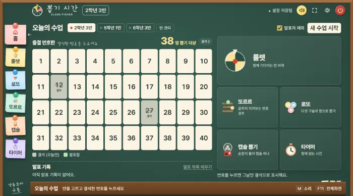
교실 발표자 뽑기 · Windows용 무료 프로그램 뽑기 시간 설치·인터넷·학생 이름 없이, 번호로 발표자를 뽑아요. 뽑기 시간 보러 가기내 자료로 시작하는 영어 공부
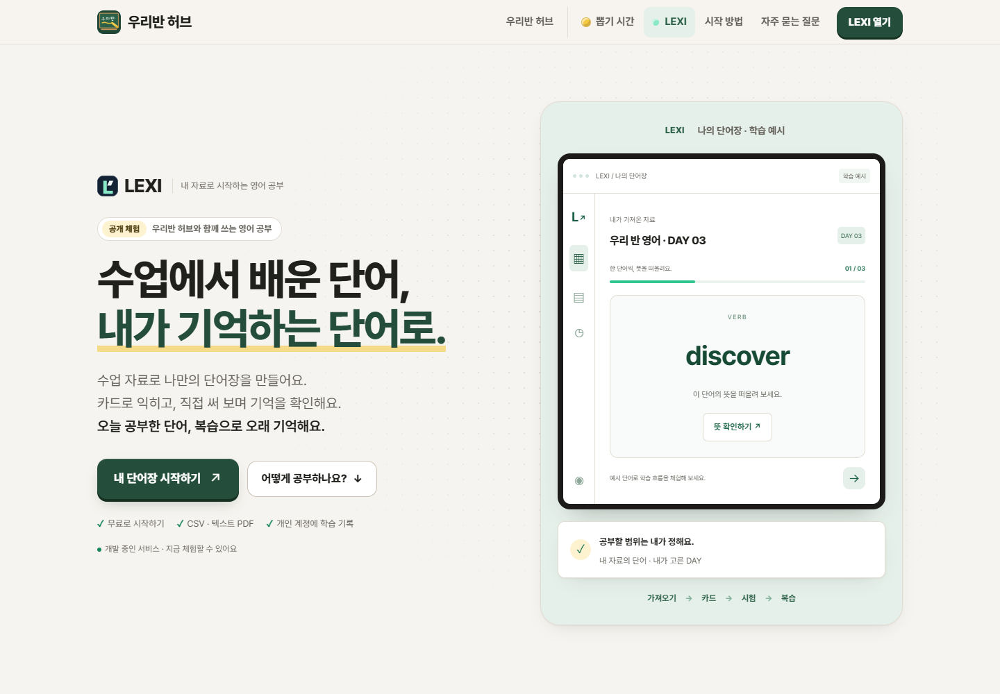
학생·선생님을 위한 무료 영어 학습 서비스 LEXI CSV·텍스트 PDF로 단어장을 만들고, 카드로 익힌 뒤 직접 써 보며 복습해요. 우리반 허브 계정과 별도로 가입해요. 만 14세부터 이용할 수 있어요. LEXI 알아보기